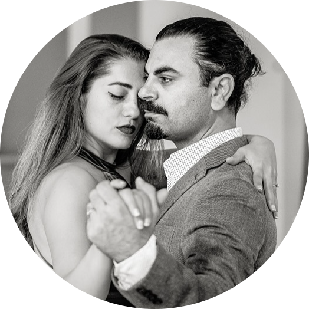

|  |
ÖZGÜR DEMIR
|
Özgür Demir, 2001 yılında 19 yaşındayken Tango dans
etmeye başladı. Ilk ders itibari ile profesyonel olma kararı verdiği için
çok çalıştı ve çok hızlı ilerledi. Hayatını Tango`ya adadı ve hayal ettigi
gibi başarılı ve tanınmış bir maestro oldu.
Özgür Demir, 2007 yılından bu yana dünyanın dört bir
yanından binlerce öğrencinin gelişimini dans dersleri ve mentorluk
hizmetleriyle desteklemiş bir profesyoneldir. 7 yıl kadar Buenos Aires te
yasadi ve Tango dersleri verdi. Uzun yıllar Avrupa da bir çok şehirde
festivallere, workshoplara ve derslere misafir eğitmen olarak katildi.
2015 yılından beri güzel eşi İlksun ile birlikte hem Türkiye de hem de
Isviçre de düzenli Tango dersleri ve workshopları vermekte ve
organizasyonlar yapmaktadırlar. 2019 yılında İzmir'de
Vamos Dans Okulu nu açarak
yılların dans tecrubelerini "Vamos" adıyla Izmir ve Basel de
paylaşmaktadırlar.
| Tango Baslangic | Tango Orta | Tango Ileri | Tango Workshop |
|---|---|---|---|
| Carsamba | Carsamba | Carsamba | Sali |
| 19.00 | 20.00 | 21.00 | 20.00 |